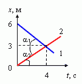
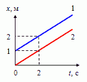
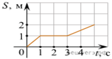
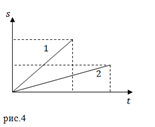
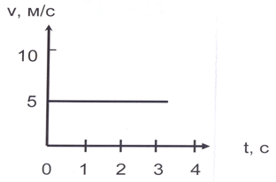

Графики каких движений показаны на рисунке? Как отличаются скорости движения этих тел? В какой момент времени тела встретились? Какие пути тела прошли до встречи?
На рисунке представлены графики зависимости координаты двух тел от времени. Графики каких зависимостей показаны? Какой вид имеют графики зависимости скорости и пути, пройденного телом, от времени?
На рисунке представлен график зависимости пути от времени. Определите по графику скорость движения велосипедиста в интервале от момента времени 1 с до момента времени 3 с после начала движения. Ответ дайте в метрах в секунду.
Движение материальной точки задано двумя графиками пути от времени. Какой из графиков соответствует большей скорости движения тела?
По графику v = v(t) прямолинейного движения определите путь, пройденный телом за 30 с.
